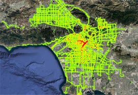
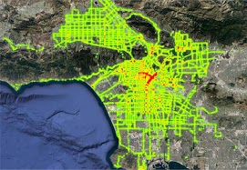

Real-time Traffic Monitoring
T4 enables intelligent analytics over real-time and historical trajectories from vehicles. At the front end, we visualize the current traffic flow and result trajectories of different types of queries. At the back end, T4 is able to support multiple types of common queries over trajectories, with compact storage, efficient index and pruning algorithms [SIGIR'18].
Intelligent Traffic Signal Control
Reinforcement learning-based traffic light controller learns by itself effectively to reduce traffic jams. We train the deep models for traffic flow prediction and traffic signal control to reduce traffic congestion.

Interactive Trip Planing
TISP enables users’ interactive exploration of POIs and trajectories in their incremental trip planning. At the back end, TISP is able to support seven types of common queries over spatial-only, spatial-textual and textual-only data, based on our proposed unified indexing and search paradigm [WSDM'18]. At the front end, we propose novel visualization designs to present the result of different types of queries.
 
